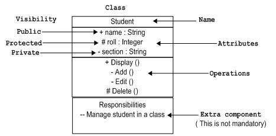
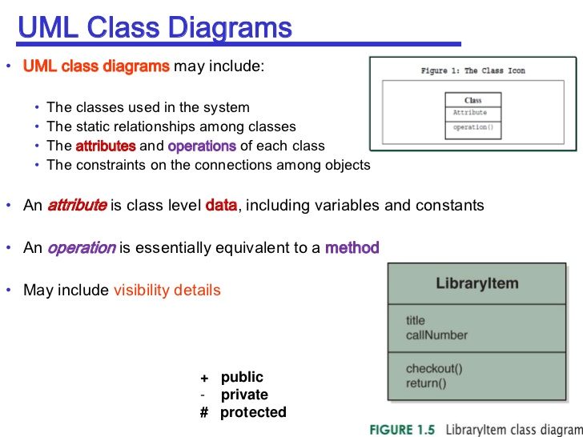
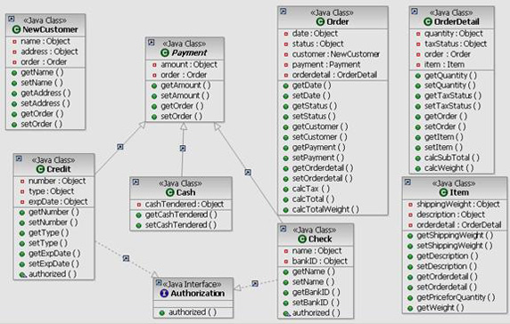

1주 2주 3주 4주
1주
- 월
- JDK 설치
다운로드
환경변수 설정:
1. 컴퓨터 > 속성(오른쪽 마우스) > 고급 시스템 설정 > 환경변수 > (~에 대한 변수: 한 계정 / 시스템 변수: 전체)
2. PATH: 자바설치 전 위치/java/bin/
JAVA_HOME: 자바설치 전 위치/java
- Eclipse 설치
다운로드
사용법:
1. File > new > Project(Default로 Finish)
2. 폴더 우클릭 > New > Class(사용할 클래스명만 적고 Default로 Finish)
- 화
- Day02/
class Test01{
public static void main(String[] args){
System.out.println("Hello, Java!");
}
}
- 주석: Day02/
/**
*
* Java Doc
* @author Chanjung Kim
*
*/
public class Test01 {
public static void main(String[] args) {
System.out.println("안녕하세요. 자바2일차입니다.");
System.out.println("내일은 자바3일차 입니다.");
}
}
- 단축키
# Java Editor 단축키
Ctrl + Shift + M : 특정 클래스 Import 시키기
Ctrl + Shift + O : 자동으로 Import 시키기
Ctrl + Shift + F : 코드 자동 정리
Ctrl + Shift + G : 특정 메써드나 필드를 Reference하고 있는 곳을 찾는다.
Ctrl + 1 : Quick Fix. 에러가 발생했을 경우 Quick Fix를 통해 쉽게 해결이 가능하다.
Ctrl + Shift + / : 블럭 주석 설정
Alt + Shift + UP : 커서를 기준으로 토큰단위 블럭지정
Alt + Shift + DOWN : 커서를 기준으로 토큰단위 블럭해제
CTRL + L : 특정 줄번호로 가기
Alt + Shift + J : 자동으로 주석 달기 (메소드나 멤버변수에 포커스 두고 실행)
# Window 이동
F10 : 메뉴창을 활성화
Ctrl + F8 : 다음 Perspective로 이동
Ctrl + N : 새로운 파일 및 프로젝트 생성.
Ctrl + Shift + Down : Java Editor에서 다음 member로 이동.
Ctrl + F7 : 다음 View로 이동.
Ctrl + Shift + F7 : 이전 View로 이동.
Alt + <- : 이전 작업 화면
Alt + -> : 다음 작업 화면
F12 : 컴파일 중 에러등으로 포커스가 다른데로 갔을 때 Editor 로 커서 이동
Ctrl + 1 : 컴파일 에러가 발생한 곳에서 Ctrl + 1을 누를 경우 컴파일 에러에 대한 해결책을 제시
# 디버깅 단축키
CTRL + Shift + B : 현 커서의 위치에 브레이크 포인터 설정/해제
F11 : 디버깅 시작
F8 : 디버깅 계속
F6 : 한줄씩 실행(Step Over)
F5 : 한줄씩 실행하되 함수일 경우 그 함수 내부로 들어감(Step Into)
CTRL + R : 현재 라인까지 실행(Run to Line)
# Refactoring 단축키
Shift + ALT + 알파벳 : Refactoring을 위한 단축키 임.
# RUN 단축키
Ctrl + F11 : 이전에 실행되었던 Run파일 실행.
- 메소드와 변수
public class Test03 {
public static void main(String[] args) {
int x;
int y;
int sum;
x=100;
y=100;
sum=x+y;
System.out.println(sum);
return;
}
}
- 입력 받기: Scanner
import java.util.*;
public class Test04 {
public static void main(String[] args) {
Scanner sc = new Scanner(System.in);
int n1;
int n2;
int sum;
System.out.println("첫 번 째 숫자 입력하세요.: ");
n1 = sc.nextInt();
System.out.println("두 번 째 숫자 입력하세요.: ");
n2 = sc.nextInt();
sum = n1 + n2;
System.out.println("결과값: "+sum);
}
}
- 명명법
class: 대문자로 시작 ex. Main
variable, method: 소문자로 시작 ex. main
공동: 연속 단어는 _나 대문자로 표기 ex. my_name, myName
camelCase: 낙타등 표기법 (낙타등과 같이 들쑥날쑥)
// 개발자 간의 기본적인 약속임
- 자료형
byte: 주로 뒷 부분 네트워크 통신에서 사용
int: 정수
double: 실수
char: 한 단어(유니코드, utf-8) ex.'a', '1', '한'
*String은 기본자료형이 아닌 참조 자료형(대문자로 시작)
- 수
- 진법
| 구분 |
2진수 |
8진수 |
10진수 |
| 표현 가능 수 |
0, 1 |
0 ~ 7 (8개) |
0 ~ 9, A ~ F (16개) |
| 변환법 1 |
1010 1010 |
(010)(10 1)(010) |
(000010)(10 1010) |
| 변환법 2 |
2^8 |
- |
16^2 |
- +연산자의 특징
System.out.println("20"+10);
int a = 10;
System.out.println(20+10);
System.out.println(20+a);
int n = -10;
System.out.println(+n);
- 전위 연산자와 후위 연산자
public class Test01 {
public static void main(String[] args) {
int x = 100;
int y = 100;
System.out.println("x++: "+(x++));
System.out.println("++y: "+(++y));
System.out.println("x: "+x);
System.out.println("y: "+y);
System.out.println(100+200);
System.out.println("100"+200);
}
}
public class Test02{
public static void main(String[] args){
int a = 10, b, c, d, e, f;
b = a++ + 10;
c = --b * 2;
d = a + a++;
e = d-- - 5;
f = a + b;
System.out.println(a);
System.out.println(b);
System.out.println(c);
System.out.println(d);
System.out.println(e);
System.out.println(f);
}
}
public class Test02{
public static void main(String[] args){
int a = 20, b, c, d, e, f;
b = a++ + 10;
c = --b * 2;
d = --a + a++;
a = b++ + --c;
e = d-- - 5
f = a++ + b;
System.out.println(a);
System.out.println(b);
System.out.println(c);
System.out.println(d);
System.out.println(e);
System.out.println(f);
}
}
- 논리 연산자
public class Test03 {
public static void main(String[] args) {
int a=1, b=1, c=10, d=100;
boolean r1 = (a>b);
boolean r2 = (b<=c);
boolean r3 = (b<=a);
boolean r4 = (c>=d);
boolean r5 = (a==b);
boolean r6 = (b!=c);
System.out.println(r1);
System.out.println(r2);
System.out.println(r3);
System.out.println(r4);
System.out.println(r5);
System.out.println(r6);
}
}
public class Test04 {
public static void main(String[] args) {
int a=1, b=1, c=10, d=100;
boolean r1 = (a > b) && (b >= c);
boolean r2 = (c <= a ) || (a >= d);
boolean r3 = (a == c) || (b != a);
boolean r4 = !(d>c);
System.out.println(r1);
System.out.println(r2);
System.out.println(r3);
System.out.println(r4);
}
}
- 목
- 조건문 if-else
import java.util.Scanner;
public class Test01 {
public static void main(String[] args) {
Scanner sc = new Scanner(System.in);
int score;
char grade;
System.out.print("점수를 입력하세요: ");
score = sc.nextInt();
if(score>=50) {
grade = 'A';
} else {
grade = 'F';
}
System.out.println(grade);
sc.close();
}
}
- 조건문 else if문의 등장
import java.util.Scanner;
public class Test03 {
public static void main(String[] args) {
Scanner sc = new Scanner(System.in);
int score;
char grade;
System.out.print("점수를 입력하세요: ");
score = sc.nextInt();
if(score >= 70) {
grade = 'A';
}else if(score >= 40) {
grade = 'B';
}else {
grade = 'C';
}
System.out.println("당신의 학점은 "+grade+"입니다.");
sc.close();
}
}
- else if 응용
import java.util.Scanner;
public class Test05 {
public static void main(String[] args) {
Scanner sc = new Scanner(System.in);
int count = 0;
System.out.println("시험 종류를 입력하시오.: ");
String test = sc.next();
System.out.println("성적을 입력하시오.: ");
int a = sc.nextInt();
System.out.println("이름을 입력하시오.: ");
String name = sc.next();
System.out.println("엄마 이름을 입력하시오.: ");
String momName = sc.next();
if( a == 100) {
System.out.println("차석입니다.");
}
else if( a < 99) {
if( a < 99 )
if( name == "정유라" )
if( test == "수능"){
if( momName == "최순실")
System.out.println("수석입니다.");
else {
System.out.println("합격입니다.");
}
}
System.out.println("탈락입니다.");
}
else if( a < 90 ){
count++;
System.out.println("예비"+100+count+"번 입니다.");
}
else System.out.println("탈락입니다.");
// if, else if, else이 한 줄만 포함한다면 {, }는 생략 가능
sc.close();
}
}
- 조건문 Switch-case문
public class Test06 {
public static void main(String[] args) {
Scanner sc = new Scanner(System.in);
System.out.print("숫자를 입력하시오.: ");
int n = sc.nextInt();
switch(n){
case 0:
System.out.println("없음");
break;
case 1:
System.out.println("하나");
break;
case 2:
System.out.println("둘");
break;
default:
System.out.println("많음");
break;
}
sc.close();
}
}
Switch-case응용
import java.util.Scanner;
public class Test11 {
public static void main(String[] args) {
Scanner sc = new Scanner(System.in);
System.out.print("몇 년?: ");
int year = sc.nextInt();
System.out.print("몇 월?: ");
int month = sc.nextInt();
int days = 0;
switch(month) {
case 1: case 3: case 5: case 7:
case 8: case 10: case 12:
days = 31;
break;
case 4: case 6: case 9: case 11:
days = 30;
break;
case 2:
if((year%4==0 && (year%400==0)) || (year %400==0)) {
days = 29;
}else {
days = 28;
}
}
System.out.println("해당 월은 "+days+"일까지 있습니다.");
sc.close();
}
}
import java.util.Scanner;
public class Mission02 {
public static void main(String[] args) {
Scanner sc = new Scanner(System.in);
System.out.print("점수를 입력하세욥(0~100): ");
int score = sc.nextInt();
int a = 0;
char d;
a = score/10;
switch(a) {
case 9 :
d = 'A';
break;
case 8 :
d = 'B';
break;
case 7 :
d = 'C';
break;
case 6 :
d = 'D';
break;
case 5 :
d = 'E';
break;
default :
d = 'F';
break;
}
System.out.println("당신의 학점은 "+d+"입니다.");
sc.close();
}
}
- While 반복문: 여러 번 반복해야하지만, 언제 끝날 지 모를 때
public class Test08 {
public static void main(String[] args) {
int i = 1;
while(i<=5) {
i++;
System.out.println("i: "+i);
}
}
}
/* Do-While
do{
// 내용
}while(조건);
구구단 1
import java.util.Scanner;
public class Test09 {
public static void main(String[] args) {
int i = 1;
int dan;
Scanner sc = new Scanner(System.in);
System.out.print("몇 단?: ");
dan = sc.nextInt();
System.out.println("--구구단 시작--");
while(i<=9) {
System.out.println(dan + "x" + i + "=" + (dan*i));
i++;
}
System.out.println("--구구단 종료--");
sc.close();
}
}
유클리드 알고리즘
import java.util.Scanner;
public class Test10 {
public static void main(String[] args) {
Scanner sc = new Scanner(System.in);
System.out.print("숫자 1: ");
int x = sc.nextInt();
System.out.print("숫자 2: ");
int y = sc.nextInt();
int r = 0;
while( y!=0 ) {
r = x % y;
x = y;
y = r;
r = x;
}
System.out.println("최대 공약수는 "+r+"입니다.");
sc.close();
}
}
- For 반복문: 횟수가 명확할 때, 특정 번 반복할 떄
for(int i = 0 ; i < n ; i++){
}
추가: for-each 문
- 금
- 시험
JDK와 JRE의 차이?
2주
- 월
- Class와 객체
[객체지향 내용 정리]
클래스 : 객체를 만들기 위한 설계도. 필드부분과 메소드 부분으로 설계됨.
객체 : 클래스의 설계가 반영되어 실제 메모리가 할당된 독립적인 개체.
필드 : 멤버변수라고도 불리며 객체가 존재하는 동안 그안에 계속 유지되는 변수
메소드 : 함수. 명령어의 집합, 묶음. 객체 안에 존재하는 작은 부품.
참조변수를 이용해 호출할 때 실행됨.
가비지컬렉터 : new 키워드로 Heap 영역에 생성된 객체를 참조하는 변수가
하나도 존재하지 않는 경우 해당 객체를 소멸시키는 역할
package lab01;
public class BankAccount {
int balance;
void deposit(int amount) {
balance+=amount;
}
void withdraw(int amount) {
if(this.balance < 0 | this.balance < amount) {
System.out.println("잔고가 부족합니다. 거래 취소됨.");
}else {
balance-=amount;
}
}
int getBalance() {
System.out.println(balance);
return balance;
}
double addInterest(int amount) {
double interest = amount + ((double)amount*0.075);
return interest;
}
}
package lab01;
public class BankAccountTest{
public static void main(String[] args) {
BankAccount b = new BankAccount();
b.balance=500;
b.getBalance();
b.withdraw(60);
b.getBalance();
b.addInterest(b.balance);
b.getBalance();
}
}
class는 설계도면
object(객체)는 실제만들어진 것
instance는 메모리에서 사용중인 것 (객체와 동의어라고 봐도 상관 무)
Object obj = new Object();
와 같은 형식으로 객체 생성
obj. 와 같이 점으로 obj 객체의 멤버(변수/함수)에 접근 가능하다.
단, 사용할 클래스가 컴파일이 되어 있어야한다.
- 참조형 타입인 String의 다른 면모
대문자로 시작하는 String는 사실 클래스이다.
String str = new String();
로 객체 생성 가능하며
str.와 같이 점을 찍으면 멤버 메소드에 접근이 가능하다.
str.charAt(int);
str.equals(str2);
str.equalsIgnoreCase(str2);
str.length();
str.concat();
str.contains();
str.isEmpty();
str.toUpperCase();
str.toLowerCase();
Integer.toString();
- 문자 다루기 - char <-> int

Scanner sc = new Scanner(System.in);
int a = (int) sc.next().charAt(0);
int s = System.in.read();
System.out.println(a);
System.out.println(s);
- 화
- Review
객체?
참조변수(클래스변수)
클래스
가비지컬렉터 ; 시점은 알 수 없음
null이란? ex. String s = null; // s는 주소 저장 변수, null = 주소 없음, 빔
[== 연산자를 이용한 참조변수 비교]
해당 참조변수에 대입된 주소자체를 비교하는 것임! 객체에 있는 데이터의
비교가 아니라는 점 기억하기!
JVM구조
 기본자료형(원시형) 변수는 (땅값이 똥값인) Stack영역에
참조형(참조타입) 변수(=객체)는 Heap영역이나 Method영역에 객체 주소를 가진다.
-----------------------------------------------------
변수 분류 기준
1. 무엇을 저장하는가?
=>데이터 ---------------------> 기본자료형 변수
=>(객체의) 주소 --------------> 참조(클래스) 자료형 변수
2. 어디에 선언하는가?
=> 클래스 내부 ---------------> 멤버변수(=인스턴스 변수)
=> (클래스 안의 메소드 내부) --> 지역변수
[멤버변수의 특징]
- 객체가 생성되는 시점에 객체 내부에 만들어져서 객체가 소멸될 때까지 유지됨.
- 초기화 하지 않으면 기본값이 들어감.
[지역변수의 특징]
- 해당 메소드가 실행될 때 만들어져서 메소드 종료시 사라짐.
- 초기화 하지 않으면 아무 값도 들어가지 않음(연산, 화면출력 불가)
------------------------------------------------------
기본자료형(원시형) 변수는 (땅값이 똥값인) Stack영역에
참조형(참조타입) 변수(=객체)는 Heap영역이나 Method영역에 객체 주소를 가진다.
-----------------------------------------------------
변수 분류 기준
1. 무엇을 저장하는가?
=>데이터 ---------------------> 기본자료형 변수
=>(객체의) 주소 --------------> 참조(클래스) 자료형 변수
2. 어디에 선언하는가?
=> 클래스 내부 ---------------> 멤버변수(=인스턴스 변수)
=> (클래스 안의 메소드 내부) --> 지역변수
[멤버변수의 특징]
- 객체가 생성되는 시점에 객체 내부에 만들어져서 객체가 소멸될 때까지 유지됨.
- 초기화 하지 않으면 기본값이 들어감.
[지역변수의 특징]
- 해당 메소드가 실행될 때 만들어져서 메소드 종료시 사라짐.
- 초기화 하지 않으면 아무 값도 들어가지 않음(연산, 화면출력 불가)
------------------------------------------------------
 ->
Stack: 기본형
각 Thread마다 하나씩 존재, Thread가 시작될 때 할당
FILO(선입후출) 구조, push와 pop사용
메소드 정보, 지역변수, 매개변수, 연산 중 발생하는 임시 데이터 저장
Heap: new 연산자로 생성된는 객체, 배열
런타임 시 동적으로 할당하여 사용하는 영역
힙영역에서 생성된 객체와 배열은 Stack 영역의 변수나 다른 객체의 필드에서 참조
자세히:
[일반적인 메모리 구조(C언어에서)]
[자바 메모리 구조]
->
Stack: 기본형
각 Thread마다 하나씩 존재, Thread가 시작될 때 할당
FILO(선입후출) 구조, push와 pop사용
메소드 정보, 지역변수, 매개변수, 연산 중 발생하는 임시 데이터 저장
Heap: new 연산자로 생성된는 객체, 배열
런타임 시 동적으로 할당하여 사용하는 영역
힙영역에서 생성된 객체와 배열은 Stack 영역의 변수나 다른 객체의 필드에서 참조
자세히:
[일반적인 메모리 구조(C언어에서)]
[자바 메모리 구조]
- 배열
메모리 공간에 n크기의 배열은
[0][1][2]...[n-1]
index 0부터 n-1까지 존재함.
int[] arr = new int[5];
과 같이 5크기의 배열을 생성 (배열은 객체이다.)
index는 0부터 4까지 존재
arr.length는 길이를 알 수 있음.
배열은 길이를 정의하고 사용하기 때문에 바로 길이를 알 수 있다.
length는 arr의 멤버 변수다.(String은 str.length()와 같은 멤버 메소드이다.)
(자바 배열 선언의 예)
int[] arr = {10, 30, 20};
package test02;
import java.util.Scanner;
public class Test {
public static void main(String[] args) {
Scanner sc = new Scanner(System.in);
int n = sc.nextInt();
int[] arr = new int[n];
int sum = 0;
for(int i = 0 ; i < n ; i++) {
arr[i] = sc.nextInt();
sum+=arr[i];
}
System.out.println(sum);
sc.close();
}
}
int[] arr = {1, 7, 3, 5, 5, 1};
int sum = 0;
for( int i : arr){
sum+=i;
System.out.print(i+", ");
}
- 메소드
클래스 내부에 필드 변수 다음으로 있는 것.
접근자 (static final) 변환형 메소드명(자료형 인자1, 자료형 인자2, ...){
//내용
}
처럼 생김.
void:반환형이 없음
그 외에는 메소드 끝에
return 변수명;
으로 끝나 반환값을 함수 호출부에 넘겨줘야함
ex.
public static void main(String[] args){
...
}
public static double speedUp(int x, int y){
return x+y;
}
public static int[] changeArray(int[] arr){
for(int i = 0 ; i < arr.length ; i++){
arr[i]=0;
}
return arr;
}
- 접근제한자
public: 외부 객체에서 자유롭게 접근이 가능한 멤버
private: 같은 클래스 멤버가 아니면 접근 불가능
(default): 같은 패키지 안에서는 public이나 마찬가지()다른 패키지에서 접근 불가능)
protected: 자식 클래스에서 접근 가능(추후 상속을 배우면서 학습)
package my;
public class Car {
private int speed = 0;
private String color = "WHITE";
private String model = "Sonata";
public void printCarInfo() {
System.out.println("현재속도:"+speed);
System.out.println("색상:"+color);
System.out.println("차종:"+model);
}
}
package my;
public class Test {
public static void main(String[] args) {
Car myCar = new Car();
myCar.printCarInfo();
System.out.println("현재속도:"+myCar.speed);
}
}
- 수
- Setter 와 Getter
[객체지향 정보은닉]
* 클래스의 멤버변수 접근지정자는 대부분 private으로 선언함
* private은 객체외부에서 참조변수로 접근했을 때 보이지 않음
* 객체 내부의 private 변수에 값을 설저하고 싶을 때? ---> 설정자 Setter 메소드 사용!
* 객체 내부의 private 변수의 값을 외부에서 받아보고 싶을 때 ---> 접근자 getter 메소드 사용!
package test01;
public class Date {
private int year = 2017;
private String month = "1월";
private int day = 1;
public void setDay(int d) {
if(d<=31 && d>=1) {
day = d;
} else {
System.out.println("부정합한 day정보 입니다.");
}
}
public void setMonth(String n) {
month = n;
}
public void setYear(int y) {
year = y;
}
public int getYear(int y) {
return year;
}
public String getMonth() {
return month;
}
public int setDay() {
return day;
}
public void printDate() {
System.out.println(year+"-"+month+"-"+day);
}
}
package test01;
public class Test {
public static void main(String[] args) {
Date today = new Date();
today.setDay(5);
today.setYear(2011);
today.printDate();
}
}
- 메소드 오버로딩
하나의 클래스 내부에 같은 이름의 메소드를 2개 이상 설계해 놓는 기법
!! 주의사항: 매개변수 타입, 매개변수 갯수, 리턴 타입 중 하나라도 달라야함(완벽히 똑같은 메소드 중복은 불가함)
package test03;
public class Car {
private String color = "WHITE";
private String model = "Sonata";
private int speed = 0;
public void speedUp() {
speed+=10;
}
public void speedUP(int s) {
speed+=s;
}
public void printCarInfo() {
System.out.println("차종:"+model+"/현재속도"+speed);
}
}
package test03;
public class Test {
public static void main(String[] args) {
Car c = new Car();
c.printCarInfo();
c.speedUp();
c.printCarInfo();
c.speedUp();
c.printCarInfo();
c.speedUp();
c.printCarInfo();
}
}
- UML(Unified Modeling Language) 다이어그램



public: +
private: -
변수와 메소드(반환형, 매개변수)만 작성
설치방법: Help > Install New Software > Add...
>
Name: ObjectAid UML Explorer
Location: http://objectaid.com/update/current
> Ok > License required 제외하고 모두 설치
사용방법: Project Explorer > 원하는 폴더에서 오른쪽 클릭
> New > Project > Object UML Diagram > Class Diagram > 원하는 Name으로 Dault값으로 Finish
> Project Explorer에서 java파일을 드래그인 드롭으로 오른쪽 화면에 끌어다 놓으면 해당 파일의 UML이 자동 생성됨.
- toString
(자바와 같은) 객체지향 언어들은 객체에 toString이라는 메소드를 기본적으로 제공한다.
일반적으로 toString은 그 객체를 설명해주는 문자열을 리턴한다.
그리고 객체의 toString을 덮어쓰기(overriding)하면 다른 형식의 문자열을 리턴할 수 있다.
문자열이 기대되는 곳에서 문자열이 아닌 객체를 사용하면 시스템은 암시적으로 toString을 호출한다.
자바스크립트에서는 prototype을 이용해 객체의 메소드를 덮어쓰기(override)할 수 있다.
자바에서는 System.out.println(객체명)을 쓰면 바로 출력이 가능하다.
toString이란 이름은 이미 정해져 있는 이름이다.
(=System.out.println(객체명.toString()))
#BankAccountTest.java
class BankAccount{
int accountNumber;
String owner;
int balance;
void deposit(int amount){
balance+=amount;
}
void withdraw(int amount){
balance-=amount;
}
public String toString(){
return "현재 잔액은 "+ balance +"입니다.";
}
}
public class BankAccountTest{
public static void main(String[] args){
BankAccount ba = new BankAccount();
ba.deposit(500);
ba.withdraw(200);
System.out.println(ba);
}
}
- 목
- 참조 변수를 인자로
package test01;
public class Car {
private int price;
private String model;
public void setPrice(int p) {
price = p;
}
public int getPrice() {
return price;
}
public void setModel(String m) {
model = m;
}
public String getModel() {
return model;
}
public boolean comparePrice(Car other) {
return price == other.price;
}
}
package test01;
public class CarTest {
public static void main(String[] args) {
Car c1 = new Car();
Car c2 = new Car();
c1.setModel("Sonata");
c1.setPrice(500);
c2.setModel("BMW");
c2.setPrice(300);
if(c1.comparePrice(c2)){
System.out.println("가격이 같습니다.");
}else{
System.out.println("가격이 다릅니다.");
}
}
}
- 생성자(Constructor) 메소드
[생성자(Constructor) 메소드]
* 자바에서 객체를 생성하기위해 반.드.시 생성자 메소드를 호출해야 함
(1) 생성자 메소드의 이름은 클래스 이름과 동일함(대소문자까지 완전)
(2) 메소드 이름 왼쪽에 반환형이 없음(당연히 메소드 내부에 return 없음)
(3) 아예 작성하지 않거나 작성하기 시작하면 오버로딩을 많이 함
(4) 만약 클래스에 생성자를 하나도 작성하지 않으면 컴파일러 몸통이 비어있는
디폴트 생성자를 자동으로 끼워넣어서 번역함.
(5) 보통은 public 으로 선언함.
- 특별한 경우(singleton패턴) private 하는 경우가 있긴 있음.
----------------------------------------------------------------------
package test02;
public class Car {
private int speed;
private String model;
private String color;
public Car(){
speed = 0;
model = "SONATA";
color = "WHITE";
}
public Car(int s) {
speed = s;
model = "SONATA";
color = "WHITE";
}
public Car(int s, String m, String c) {
speed = s;
model = m;
color = c;
}
public void speedUp(int s) {
speed += s;
}
public void printInfo() {
System.out.println("속도:"+speed+"/차종:"+model+"/색상:"+color);
}
}
package test02;
public class CarTest {
public static void main(String[] args) {
Car c1 = new Car();
c1.printInfo();
Car c2 = new Car(100);
c2.printInfo();
Car c3 = new Car(50, "520d", "RED");
c3.printInfo();
}
}
- this의 용법
[this 참조변수 용도]
(1) 매개(지역)변수 이름과 멤버변수 이름 구분할 때
(2) 생성자에서 다른 생성자 호출할 때
----------------------------------------------------------------------
1. 필드변수를 가르킴
인자와 필드변수가 이름이 같을 경우, this는 필드변수를 가르킴.
this.필드변수 = 지역변수;
파란색 - 필드변수
갈색 - 지역변수(함수가 호출되면 생성 -> 함수가 끝나면 사라짐)
2. 생성자가 다른 생성자를 호출시킬 때 간소화시킬 수 있음. (가장 인자 수가 많은 생성자를 호출)
this(0, "", "");
this(0, "SONATA", "WHITE");
this(speed, "SONATA", "WHITE");
package test03;
public class Car {
private int speed;
private String model;
private String color;
public Car(){
this(0, "SONATA", "WHITE");
}
public Car(int s) {
this(s,"SONATA", "WHITE");
}
public Car(int speed, String model, String color) {
this.speed=speed;
this.model=model;
this.color=color;
}
public void speedUp(int s) {
speed += s;
}
public void printInfo() {
System.out.println("속도:"+speed+"/차종:"+model+"/색상:"+color);
}
}
- 정적 변수 - static 사용법
[정적(static) 멤버]
특정 객체에 소속되지 않음! 객체 생성하지 않아도 사용 가능한 변수나 메소드!
* 사용법 : 클래스이름.변수명(또는 메소드명)
* ex> Student.getNumOfStudent();
-----------------------------------------------------------
객체 개별 다른 데이터를 가지고 있으면 따로 만들어야하지만,
객체 생성을 여러 번해도 해당 그룹에 공통된 데이터가 있으면 static 변수로 사용.
학생 - 학생 수
package test04;
public class Student {
private String name;
private String phone;
private int age;
private static int numOfStudent=0;
public Student(String name, String phone, int age) {
this.name = name;
this.phone = phone;
this.age = age;
numOfStudent++;
}
public static int getNumOfStudent() {
return numOfStudent;
}
public String toString() {
return "이름: "+name+" 전화번호: "+phone+" 나이: "+age;
}
}
package test04;
public class Test {
public static void main(String[] args) {
System.out.println("학생 수: "+Student.getNumOfStudent());
- 드디어 알게되는 main의 비밀
main은 static이 붙어있다. -> 객체 없이 바로 사용할 수 있기 때문에. main는 무조건 메모리에 상주해야하기 때문에.
- 드디어 알게되는 final의 비밀
상수에 public static과 final을 같이 쓰는게 일반적이다.
왜냐하면 같은 값을 항상 같는 상수는 객체 생성할 때마다 가지고 있을 필요가 없기 때문이다.(메모리 절약)
public으로 하는 이유는 어차피 변경이 불가능하기 때문에 누구나 쉽게 그냥 접근해도 상관없기 때문이다.(불필요한 접근 제거)
- 금
- 객체 배열
Car[] cars = new Car[5];
cars[0] = new Car();
cars[1] = new Car();
cars[2] = new Car();
cars[3] = new Car();
cars[4] = new Car();
<
- 이중 배열(중첩 배열)
int[][] arr1 = new int[2][4];
int[][] arr2 = {{1, 2, 3, 4}, {5, 6, 7, 8}};
- 얕은 복사와 깊은 복사 (Shallow copy & Deep copy)
int[] a = {1, 2, 3, 4, 5}
int[] b = new int[a.length];
b = a;
for( int i = 0 ; i < a.length ; i++) b[i] = a[i];
- Call By Reference & Call By Value
파라미터 값을 넘겨줄 때,
실제 연결된 주소를 넘겨주어 필드 변수에 영향을 주는 것을 Call By Reference라고 하고,
지역 변수로 존재하여 필드 변수에 영향을 주지 않는다면 Call By Value라고 한다.
- 시험 틀린 것/헷갈리는 것
*배열이 아니더라도 자바에서는 초기화 하지 않으면 기본값이 설정됨.
*인스턴스 필드 = 상태 변수, 상태를 나타내기 때문에.
*컴파일 -> 바이트 코드 -> 클래스 코드 -> (객체를 만나면 인스턴스를 위한 메모리 할당)
*str.substring(4)는 str의 4째 인덱스부터 마지막 인덱스까지의 String을 의미
*같은 클래스 내에서라도 public static 이라고 선언하지 않은 메소드는 자신을 생성하지 않고서는 method를 사용할 수 없다.
3주
- 월
- 휴일... 고로 안드로이드
- 화
- 휴일... 고로 안드로이드
- 수
- 휴일 기념 Review
[객체지향 특성]
1. 캡슐화(Encapsulation)
2. 정보은닉(Information Hiding)
3. 상속(Inheritance) : 기존에 작성된 클래스를 활용해서 현재 작성하고자
하는 클래스가 상속(extends)받아 부모 클래스의 멤버(필드+메소드)
를 활용할 수 있게 하는 기법
4. 다형성 (Polymorphism)
-----------------------------------------------------------------------
[상속 주의사항]
1. 부모의 private멤버(필드+메소드)에는 접근 불가능.
- 없는건 아님. 받긴 받았는데 접근이 불가능
- 자식 클래스에서 해당 멤버를 사용하려면 getter/setter를 쓰거나?
- 부모가 private 말고 protected 해놨으면 자식이 사용 가능!
2. 오버라이딩 할때 접근지정자 축소는 불가능
3. 오버라이딩 할때 static 변경 불가.
4. 생성자 규칙!
- 자바에서 객체를 생성할 때에는 반.드.시 생성자 메소드를 호출해야 함!
- 자식 객체를 생성할 때는 당연히 자식 클래스의 생성자를 호출해야 함.
- 자식 클래스의 생성자는 반.드.시 부모 생성자를 먼.저 호출한 후
나머지 초기화 작업을 수행해야 함!
- 만약? 자식생성자에서 부모생성자를 명시적으로 호출하지 않을 경우??
컴파일러가 super(); 를 자동으로 끼워넣음!
부모클래스에 매개변수 없는 생성자가 없으면 ? 에러남~
-----------------------------------------------------------------------
[오버라이딩]
: 상속할 때! 부모클래스에서 받은 메소드의 내부를 자식버전으로 재정의함.
: 문법 - 부모클래스의 메소드형식(반환형, 메소드이름, 매개변수) 그.대.로
유지시켜야 오버라이딩으로 인정됨.
: 이 때 상속받은 부모버전 메소드 사라지는거 아님! super로 호출 가능!
[@Override 애노테이션]
: 컴파일러한테 현재 자식 클래스에서 메소드 새로 추가가 아닌 오버라이딩
하고 있음을 명확하게 알림.
-----------------------------------------------------------------------
[super 참조변수의 용도]
1. 상속받아온 부모의 멤버(필드+메소드)와 현재 자식 클래스의 멤버 이름이
겹치는 경우 부모를 콕 찍어서 사용할 때 super.멤버이름
2. 자식클래스 생성자에서 부모생성자를 명시적으로 호출할 때
- 예제
package pro07;
public class Student {
private String name;
private String studentNumber;
private String department;
private String grade;
private String totalCredit;
public Student() {
this("홍길동", "20091922", "기계과", "4", "136");
}
public Student(String name, String studentNumber, String department, String grade, String totalCredit) {
this.name = name;
this.studentNumber = studentNumber;
this.department = department;
this.grade = grade;
this.totalCredit = totalCredit;
}
public void setName(String name){
this.name = name;
}
public void setStudentNumber(String studentNumber) {
this.studentNumber = studentNumber;
}
public void setDepartment(String department) {
this.department = department;
}
public void setGrade(String grade) {
this.grade = grade;
}
public void setTotalCredit(String totalCredit) {
this.totalCredit = totalCredit;
}
public String getName() {
return name;
}
public String getStudentNumber() {
return studentNumber;
}
public String getDepartment() {
return department;
}
public String getGrade(){
return grade;
}
public String getTotalCredit() {
return totalCredit;
}
public String toString() {
return "이름: "+this.name+"\n학번: "+this.studentNumber+"\n전공: "+this.department+"\n학년: "+this.grade+"\n총점: "+this.totalCredit;
}
}
package pro07;
public class UnderGraduate extends Student{
private String clubName;
public UnderGraduate() {
this("홍길동", "20091922", "기계과", "4", "136", "야구부");
}
public UnderGraduate(String name, String studentNumber, String department, String grade, String totalCredit, String clubName) {
super(name, studentNumber, department, grade, totalCredit);
this.clubName = clubName;
}
public String toString() {
return "이름: "+super.getName()+"\n학번: "+super.getStudentNumber()+"\n전공: "+super.getDepartment()+"\n학년: "+super.getGrade()+"\n총점: "+super.getTotalCredit()+"\n소속 동아리: "+this.clubName;
}
}
package pro07;
public class Graduate extends Student{
private String taType; // 교육조교, 연구 조교
private double scolarshipRatio;
public Graduate() {
this("홍길동", "00000000", "기계공학", "2학년", "82학점", "교육조교", 0.5);
}
public Graduate(String name, String studentNumber, String department, String grade, String totalCredit, String taType, double scolarshipRatio) {
super(name, studentNumber, department, grade, totalCredit);
this.taType = taType;
this.scolarshipRatio = scolarshipRatio;
}
public String toString() {
return "이름: "+super.getName()+"\n조교 타입: "+this.taType+"\n장학금 비율"+this.scolarshipRatio+"\n학번: "+super.getStudentNumber()+"\n전공: "+super.getDepartment()+"\n학년: "+super.getGrade()+"\n총점: "+super.getTotalCredit();
}
}
package pro07;
public class Test {
public static void main(String[] args) {
Student st = new Student();
Graduate gSt = new Graduate();
UnderGraduate uSt = new UnderGraduate();
System.out.println(st);
System.out.println("------------------");
System.out.println(gSt);
System.out.println("------------------");
System.out.println(uSt);
}
}
- 주의 사항: Static을 남용하지 말자!
class ClassA{
public void methodOne(int i){}
public void methodTwo(int i){}
public static void methodThree(int i){}
public static void methodFour(int i){}
}
------------------------------------------
class ClassB{
public static void methodOne(int i){}
public void methodTwo(int i){}
public void methodThree(int i){}
public static methodFour(int i){}
}
1. 정적 메소드로 인스턴스 메소드를 재정의할 수 없다
2. 서브 클래스에서 똑같은 정적 메소드를 정의하는 경우, 가린다고(Hide)한다.
이 경우에 서브 클래스 객체에서 호출되면 서브 클래스의 정적 메소드가 호출되고 만약 슈퍼 클래스 객체에서 호출되면 슈퍼 클래스의 정적 메소드가 호출된다.
- Ctrl + Space(*)의 비밀과 Generate Getters and Setters
main은 main 후 *
System.out.println는 syso 후 *
를 사용해왔었다.
안드로이드 스튜디오를 사용해본 적이 있는 사람이라면 annotation이 자동으로 되는 걸 알 수 있다.
그것을 Eclipse에서는 어떻게 사용할까? 즉, 자동으로 오버라이딩을 하려면 어떻게 해야할까?
답은 간단하다. 부모 클래스의 메소드의 이름을 다른 것들과 구분되게 앞글자만 적은 후 *를 해주면,
목록에 뜨게 되고 그것을 선택하면 자동으로 @Override와 함께 메소드가 불러와진다.
이와 같은 방법으로 getter와 setter도 만들 수 있다.
한 두개 일때는 *로 간편하게 할 수 있지만, 변수가 많을 때는 Source > Generate Getters and Setters를 사용하면
손쉽게 Getter와 Setter를 만들 수 있다.
- 목
- 무진행
- 금
- 무진행
4주
- 월
- 무진행
- 화
- 무진행
- 수
- 무진행
- 목
- 무진행
- 금
- 무진행